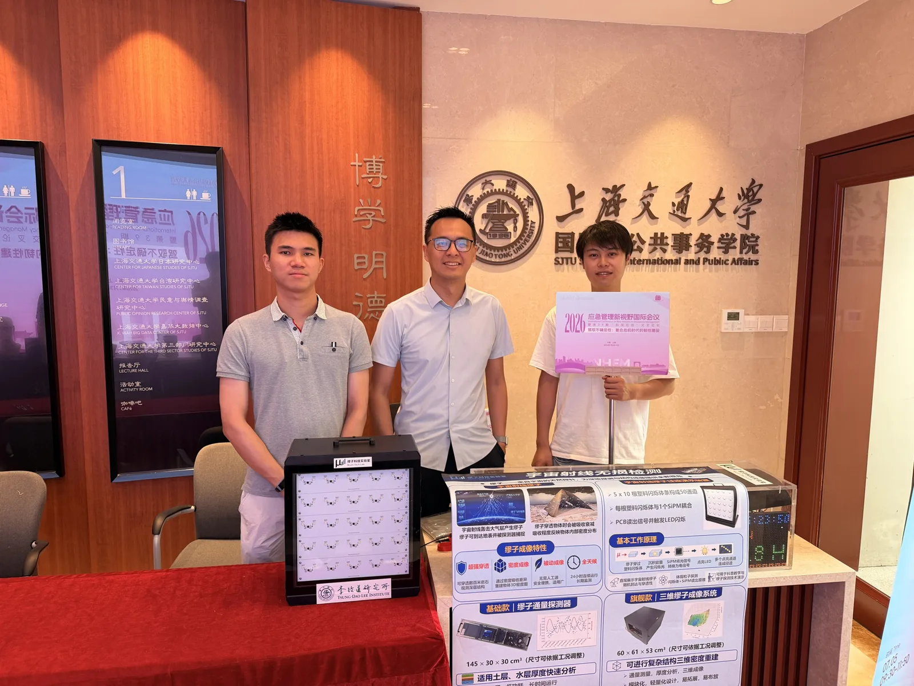
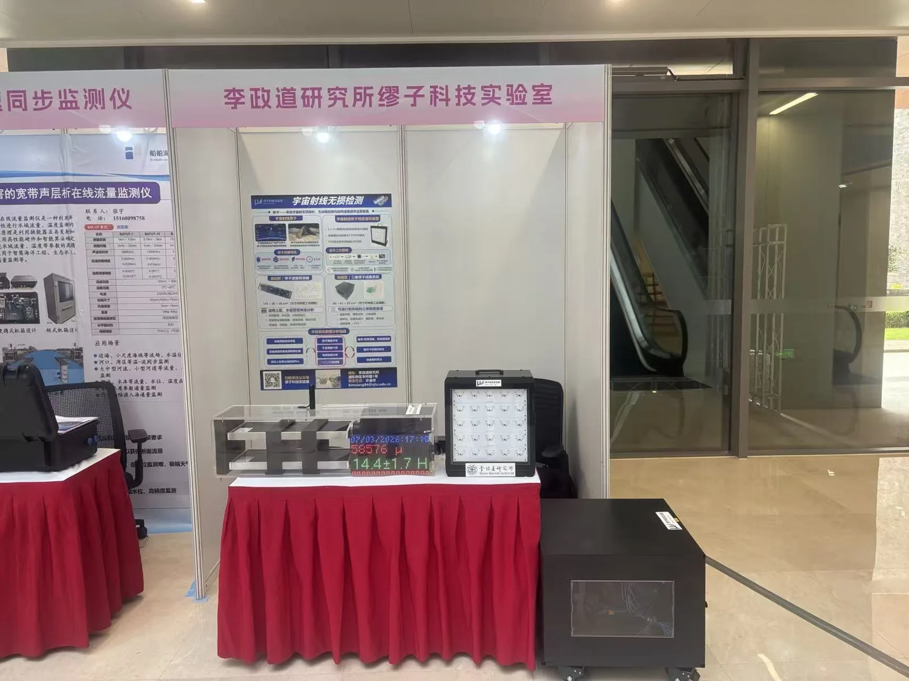
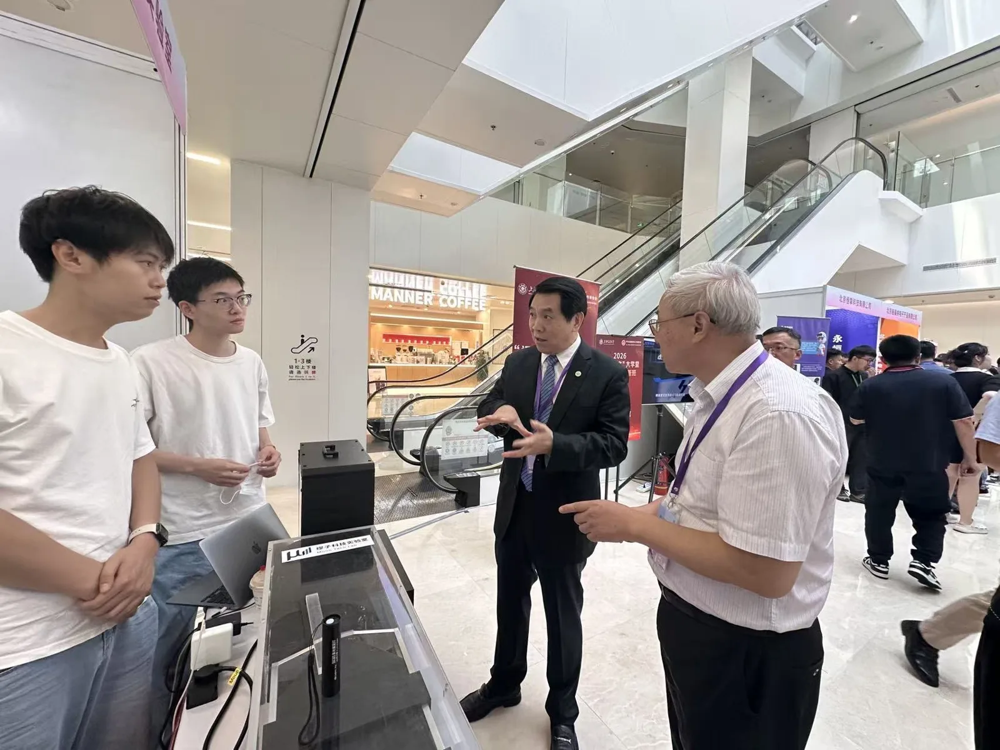
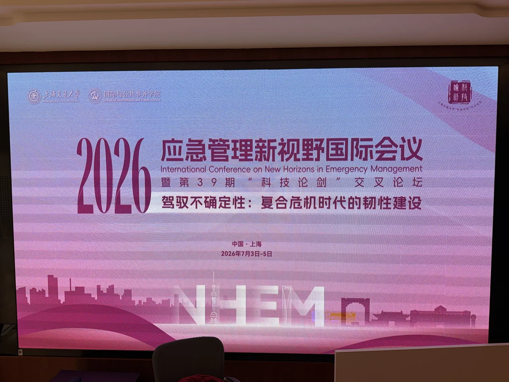

From 3 to 5 July 2026, Kim Siang Khaw, Yinghe Wang【王赢鹤】, Guan Ming Wong【黄冠铭】 and Yonghao Zeng【曾永浩】 took part in the 2026 International Conference on New Horizons in Emergency Management (NHEM, 应急管理新视野国际会议), held together with the 39th “科技论剑” Interdisciplinary Forum at the SJTU School of International and Public Affairs. This year’s theme was “Navigating uncertainty: building resilience in an era of compound crises” (驾驭不确定性：复合危机时代的韧性建设).


At the exhibition, the TDLI Muon Tech Lab (李政道研究所缪子科技实验室) showed how cosmic-ray muons can be used for non-destructive testing (宇宙射线无损检测) — a passive, always-on way to look inside soil, water, rock and buildings, of interest for monitoring infrastructure and geohazards. On display were:
- A cosmic-ray muon demonstrator with 50 channels: a 5 × 10 array of plastic scintillator bars, each read out by a SiPM, that lights an LED whenever a muon passes through, so visitors can watch muons arriving in real time.
- A muon flux monitor (145 × 30 × 30 cm³), the group’s basic model for long-term flux measurements and quick thickness estimates of overlying soil and water layers, shown with a live muon counter.
- A 3D muon imaging system (60 × 61 × 53 cm³), the flagship model for reconstructing the density of complex structures in three dimensions.


Visitors from emergency management, public policy and industry stopped by to discuss how muography could support infrastructure safety and geohazard monitoring.




Learn more about our muography research.
2026年7月3日至5日，许金祥、王赢鹤、黄冠铭和曾永浩参加了2026应急管理新视野国际会议（NHEM）。会议在上海交通大学国际与公共事务学院举办，同期举行第39期“科技论剑”跨学科论坛。本届会议主题为“驾驭不确定性：复合危机时代的韧性建设”。
展会上，李政道研究所缪子科技实验室展示了如何利用宇宙线缪子开展宇宙射线无损检测——这是一种被动、全天候的“透视”土壤、水体、岩石和建筑内部的方法，可服务于基础设施与地质灾害监测。展出内容包括：
- 宇宙线缪子演示装置：共50个通道，由5 × 10阵列的塑料闪烁体条组成，每根闪烁体条由硅光电倍增管（SiPM）读出；每当有缪子穿过，对应的LED即会点亮，观众可以实时“看到”缪子的到来。
- 缪子通量监测仪（145 × 30 × 30 cm³）：课题组的基础型号，用于长期通量测量以及快速估算上覆土层和水层的厚度，现场配有实时缪子计数显示。
- 三维缪子成像系统（60 × 61 × 53 cm³）：旗舰型号，用于对复杂结构进行三维密度重建。
来自应急管理、公共政策和产业界的观众纷纷驻足，与团队探讨缪子成像在基础设施安全和地质灾害监测中的应用前景。
了解更多关于我们的缪子成像研究。